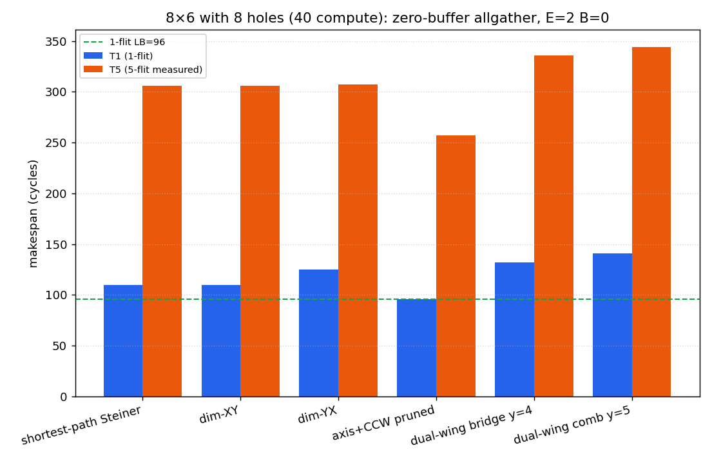

无阻塞 / 无冲突 / 无缓冲（B=0）· 下 ramp E=W=2 · H=7 V=9 · 生成 2026-07-22T13:57:54.685351+00:00
1-indexed：第 4、5 列 × 第 1–4 行 = 8 个非计算节点（图中 H）； 其余 40 个为计算节点 C。Allgather 端点仅在 40 个 C 之间。
H 不是坏点 / 故障点：其上的 router 与相邻 mesh 链路全部可用，可正常转发 flit。 与 C 的唯一差别是没有参与本次 allgather 的计算 PE——不 inject、不 eject， 只作中转（树上的 Steiner 点）。橙虚线边表示路径经过这些活着的 H router，不是绕开故障。
图例：C = 计算端点；H = 非计算但 router/链路仍在线的中转节点。
■ C↔C 边 ■ 经 H router 中转（虚线；H≠故障） ● 源 ●H 非计算节点（router/链路可用）

| 方案 | dilation | 链路复用 | cyclic_lb | T1 | gap→LB | delta2 min/avg/max | T5（5-flit 实测） | II_eff | T_avg |
|---|---|---|---|---|---|---|---|---|---|
| shortest-path Steiner | 96 | 34 | 34 | 110 | 14 | 1/27.4/74 | 306 | 49.0 | 208.0 |
| dim-XY | 96 | 34 | 34 | 110 | 14 | 1/27.4/74 | 306 | 49.0 | 208.0 |
| dim-YX | 96 | 34 | 34 | 125 | 29 | 4/26.05/60 | 307 | 45.5 | 216.0 |
| axis+CCW pruned | 96 | 34 | 34 | 96 | 0 | 1/8.15/26 | 257 | 40.25 | 176.5 |
| dual-wing bridge y=4 | 123 | 39 | 39 | 132 | 36 | 1/22.9/54 | 336 | 51.0 | 234.0 |
| dual-wing comb y=5 | 141 | 39 | 39 | 141 | 45 | 1/20.6/53 | 344 | 50.75 | 242.5 |
最优 1-flit：axis+CCW pruned；最优 5-flit：axis+CCW pruned； 最优 T_avg：axis+CCW pruned。 delta2 = 逐源第2 flit 最早间隔；II_eff=(T5−T1)/4；cyclic_lb 仅约束整表平移。